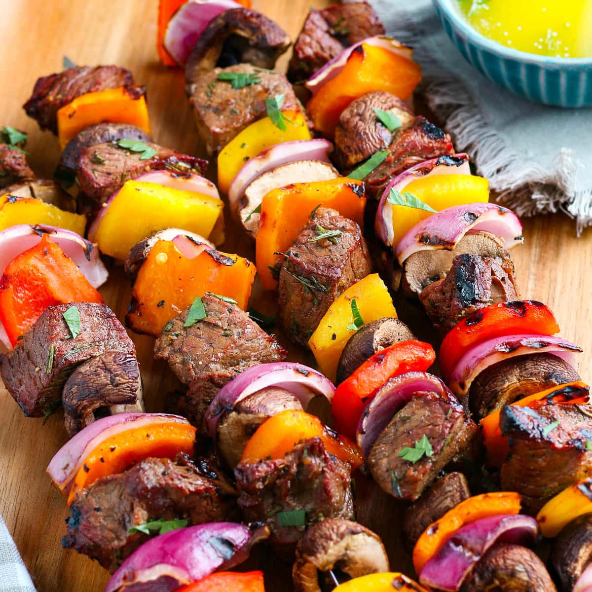

Beef Kebabs

Serving suggestion
Ingredients
- 2 red onions, cut into wedges
- 500g rump steak, thinly sliced
- 1 sachet KNORR beef stroganoff
- 15ml tomato paste
- 10 ml chilli paste
- 1 garlic clove, crushed.
- 2 spring onions, finely chopped
- 60 ml
- 300g rice, steamed
- 400g butternut, mashed
Steps
- Thread onion wedges and beef strips onto 12 skewers.
- Place KNORR beef stroganoff sachet contents, tomato paste, chilli paste, garlic, sugar, spring onions and water in a food processor or blender and blend until smooth.
- Brush this sauce over the kebabs, cover and refrigerate for 3 hours until required.
- Cook kebabs on a hot, oiled griddle pan or braai until browned all over and cooked.
- Sprinkle with extra chopped spring onions.
- Serve with 300g steamed rice and 400g mashed butternut.